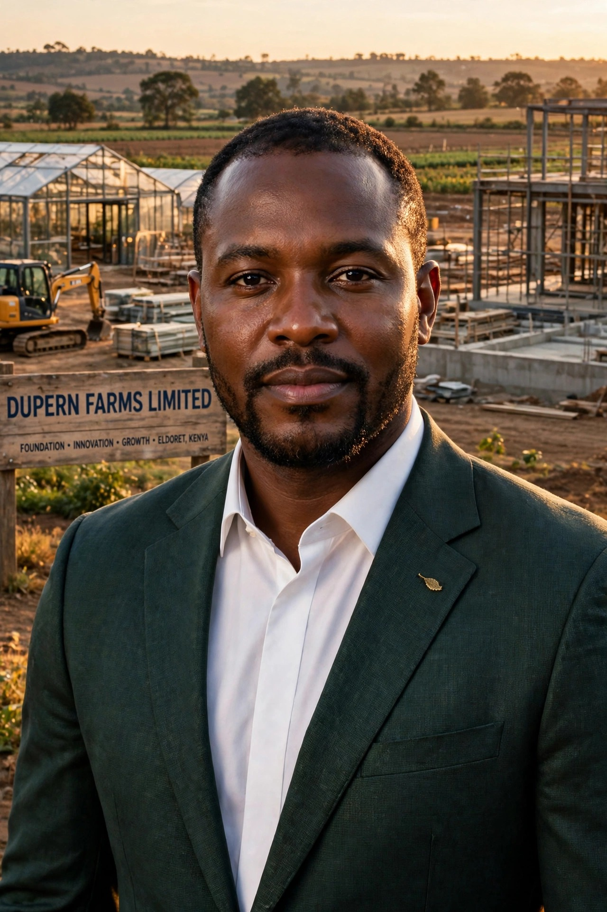

Peter Kebaso Gichana
Welcome to my personal portfolio and the digital hub for Dupern. I specialize in turning complex operational data into measurable efficiency across agribusiness, public energy infrastructure, finance, and construction.

Core Domains
- Data Analytics & AI: Python, Pandas, Power BI, and automated reporting pipelines.
- Financial & Project Management: Investment analysis, budgeting, and general construction oversight.
- Energy & Agribusiness: Sustainable county energy systems and Dupern Farms livestock operations.
Explore my featured technical and operational projects or get in touch to collaborate.